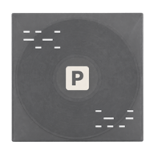

リクエスト中の曲はありません。
えむぴーが見て誰か分かる名前なら、略称やニックネームでもOKです。
名前だけで始めると、別のスマホやブラウザーでは、送った曲を変更できません。ブラウザーのデータを消したときも同じです。

次回の抽選をお待ちください。
今回の抽選が終わる前に、下の「次回の予約」から予約できます。
両方の枠をリクエストすると、次回の予約ができます。
次回の予約
まだリクエストはありません。
まだ歌い終った曲はありません。
まだ曲がありません。
報告を送るには、Pocochaの名前でログインしてください。
本名や連絡先は書かないでください。